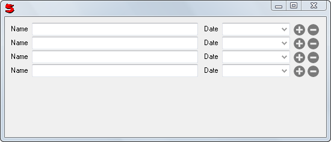

(controls)
Initially displays a single copy of the control(s). The user can add or remove rows with the plus and minus buttons.
Each "row" is wrapped in a RecordControl. The value of the RepeatControl (what Get and Set work with) is a list of records, one for each "row".For example:
Window(#(Repeat (Horz name date) ystretch: 1))